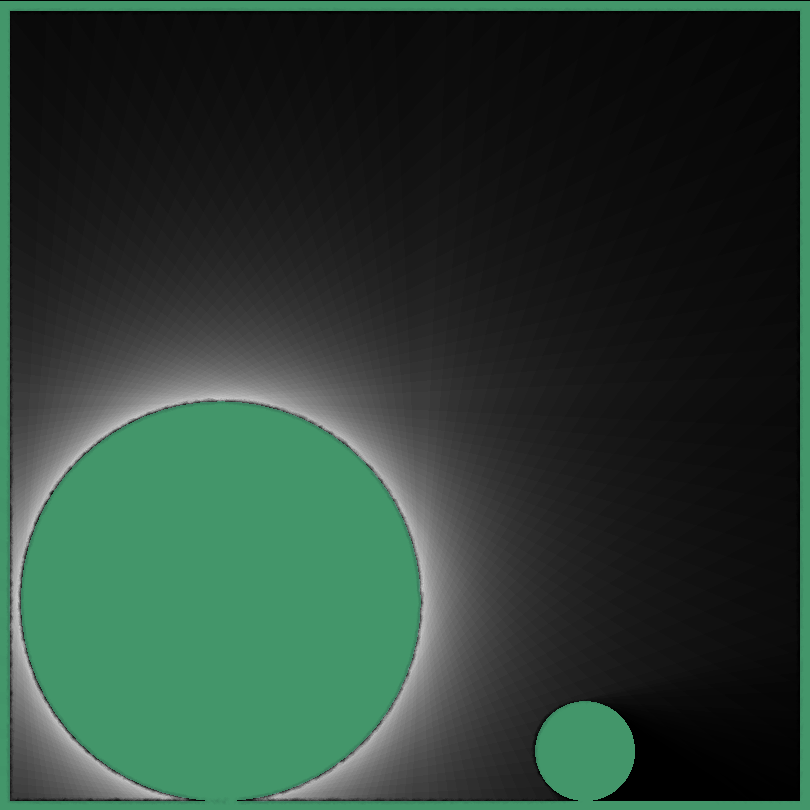

Abstract
Real-time global illumination remains an unsolved problem in high-fidelity graphics. Traditional raytracing (i.e. pathtracing) casts rays from the camera into the scene. This becomes prohibitively expensive as the number of ray bounces grows. Dependencies between rays and the high cost of testing intersections also make raytracing difficult to parallelize on a GPU. Photon mapping, which casts rays from light sources, faces the same problem. We attempt to resolve these problems in a 2D web application using shader-based radiosity with parallel ray-bundling. This algorithm can utilize the GPU more effectively by casting rays in parallel bundles. By calculating all potential intersections in a single render pass, we hoped it would be possible to achieve real-time 2D global illumination. However, we eventually discovered that our chosen platform, WebGL, presented intractable technical barriers to indirect lighting and high-fidelity real-time performance. Nevertheless, this project served as a valuable exploration of shader programming.
Technical Approach
Background
One of the main problems with Monte Carlo rendering is that similar rays become scattered and incoherent after first colliding with the scene, limiting its ability to parallelize on the GPU. Mortensen et al. first proposed an atlas-based representation of a scene's light field to achieve global illumination [Mortensen et al. 2007]. After casting parallel rays into the scene from many different angles and storing intersections in a texture atlas, one can calculate irradiance at a location with a fast recursive lookup.

|

|

|
To speed up this technique, Hermes et al. proposed using the GPU's depth-buffer to sort intersections [Hermes et al. 2010]. While this approach could reduce in-production render times for 3D scenes to a matter of hours, a 2D implementation by Thomas Diewald claimed to achieve real-time performance on commodity hardware (unfortunately without any documentation or released software) [Diewald 2017]. However, all implementations using the GPU depth-buffer rely on a feature - atomic counters - which has been compromised by the Spectre vulnerability. While it is still possible to create desktop OpenGL applications using atomic counters, all major web browsers now prohibit atomic WebGL calls. We saw an opportunity to implement parallel ray-bundling in 2D without this software vulnerability, by using the atlas-based representation first proposed by Mortensen et al.
Implementation
To reach real-time performance, our algorithm must break down into small, parallel tasks that can be written into shader programs that run on the GPU. However, the GPU must also read in scene objects every frame (since defining objects entirely in the shader would limit interactivity). Therefore we use Three.js meshes as our scene objects and calculate lighting solutions based on their current size and position. This allowed us to include user interaction and rigidbody physics with minimal overhead. For every frame we: (1) collect mesh data into shader uniforms, (2) calculate parallel ray intersections and encode them into a texture, and (3) use that texture to calculate light at each pixel.
Collecting Mesh Information
To read mesh information into the shader, we tried recompiling the shader every frame. This proved too slow for real-time performance We then attempted to encode mesh data into a texture to sample during the intersection step. Though texture sampling worked, we found it was still almost as slow as recompiling every frame.
Ultimately, we encoded mesh data into a uniform array. While this was much faster, it ran into strict hardware limitations. Each element of a uniform array counts as a unique uniform, so an array of 120 objects, each with 10 floats, would require 1200 uniforms. This can easily exceed the max uniform count on many video cards, which can be as low as 256 even on new devices. Therefore we had to keep our object counts very conservative, to avoid crashing the program for these devices. We hoped to switch to uniform buffer objects, which enjoy a much higher memory ceiling, but they are not supported on older hardware nor are they available in the WebGL version used by Three.js.
Calculating Parallel Ray Intersections
The first shader in our render pipeline, the intersection shader outputs a fixed-size texture containing carefully encoded data. We define the x-axis as the index of the parallel offset. This means that horizontally adjacent pixels correspond to adjacent rays, with x=0 being the right-most ray and x=isectWidth being the left-most ray (relative to whichever angle they were cast from). We divided the y-axis into chunks for each angle, with the height of each chunk being the maximum number of intersections each ray can record. The R, G, and B color values of each pixel contain each intersection's meshId, distance along the ray, and whether the ray enters or exits a mesh at the intersection. This lets us quickly determine how far away it is from a point on the same ray and which mesh to lookup for lighting information.
We initially attempted to calculate intersection points by raymarching across a signed distance field. However, we found that blind raymarching could not find intersections beyond the first, since the distance becomes stuck at zero. Due to the prohibitive cost of conditional branches in shaders, it was not possible to remove those meshes which the ray had already intersected. Instead, our current implementation iterates through each mesh to find those that intersect the ray. It then sorts those intersections by distance along the ray to fit within the correct depth indices of the output texture.
|
|

|
Observe that the intersect buffer has a horizontal striped pattern. This is because parallel rays tend to have similar intersection depths until they enter or exit a mesh. Indeed, we see each mesh forms a vertical pattern, because rays from many angles hit them at gradually differing offsets.
Calculating Light At Each Pixel
Once we have calculated the intersection of those rays with all of the meshes and stored it in our intersect buffer, we are able calculate the radiance for all of the scene and reflect that on the lights and shadows shown on the ground. For each pixel, we iterate through each angle. In each angle, we determine the ray passing through that pixel and find the two closest intersections (if they exist). If either of these intersections corresponds to a light-emitting mesh, we calculate the resulting irradiance at the pixel relative to its distance from the intersection. We add together all the irradiances and divide the sum by the number of angles. We adjust light emission based on the inverse-square law of light, following the equation \({emission \over (1+r)^2}\), where r is the normalized distance from the pixel to the mesh.
For indirect lighting, we use the same algorithm on the intersection points themselves, finding the light emitting onto them. However, because of float imprecision, we are not sure whether we are inside or outside the mesh. As a result, indirect light will pass through meshes in addition to bouncing off. Simply setting an offset failed to fix the problem, since we still have no heuristic on whether we are inside or outside the mesh. Nor can we rely on the "enter/exit" data encoded by the intersect buffer, since an intersection could count double or not at all if it was divided based on entrance or exit. Due to time constraints and the difficulty of the problem, we are unfortunately left with inaccurate indirect lighting.
|
|
|
Additional Features
Basic UI
We built the basic UI components necessary to load meshes from a template and insert additional meshes.
Drag and Drop
We added the ability to drag and drop meshes to allow for interaction with the scene. This feature will help demonstrate the live aspect of our project once we start calculating the light for each bounce.
Physics
We used Matter.js, which is a 2D physics engine. We integrated this physics engine with Three.js meshes. This allows us to run a physics world, that we can then rasterize onto the screen. So far, we have implemented two primitive types: rectangles and circles. We initialize our physics world in our init() function, and then at every render cycle we ask the physics engine for the new coordinates and rotation of all the shapes.
2D Distance Fields
As mentioned, we initially tried a 2D distance field to capture intersections. While this failed to give us the intersections we wanted, it proved a valuable debugging tool while working on the intersection buffer.
|
|
|
Optimizations
Since we offloaded all of our algorithm's calculations to shaders, we needed to carefully optimize them to avoid GPU bottlenecks. This included unrolling loops in Javascript, replacing conditional expressions with binary factors (i.e. multiply output by factors 0 or 1), and emulating jump statements using early-exit single iteration "for" loops. This allowed us to get fast performance in the parallel ray intersection shader, which can run at 60 frames per second even on low-end hardware. However, as our results will demonstrate, the pixel lighting shader proved far more expensive and intractable to these optimizations.
Results
Demos
|
|

|
|
|
|
References
- J. Hermes, N. Henrich, T. Grosch, and S. Mueller, "Global Illumination using Parallel Global Ray-Bundles," Vision, Modeling, and Visualization, 2010.
- J. Mortensen, P. Khanna, and M. Slater, "Light Field Propagation and Rendering on the GPU," The Association for Computing Machinery, 2007.
- T. Hachisuka, "High-Quality Global Illumination Rendering Using Rasterization," in GPU Gems 2, Matt Pharr, Ed., 2005.
- Y. Tokuyoshi, T. Sekine, and S. Ogaki, "Fast Global Illumination Baking via Ray-Bundles," THe Association for Computing Machinery, 2011.
- A. Thomsen and K. H. Nielsen, "Approximate Radiosity Using Stochastic Depth Buffering," Journal of Graphics, GPU, and Game Tools, 2011.
- The blog of Thomas Diewald
- The blog of Benedikt Bitterli
Team Contributions
Abdul: 1) Implemented physics using Matter.js. 2) Implemented drag and drop (and fixing a few bugs relating to them). 3) Worked on some ray tracing code (not ray bundling) that we ended up not using. 4) Debugged a few bugs in the parallel ray bundling code shaders. 5) Created the customized demos we're using in the report. 6) Setup and contributed to the html files on the website.